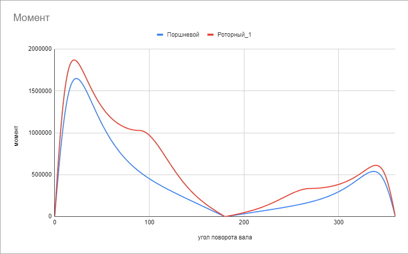
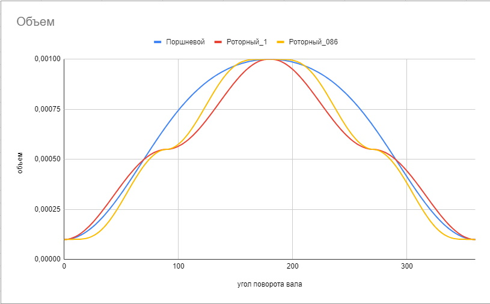
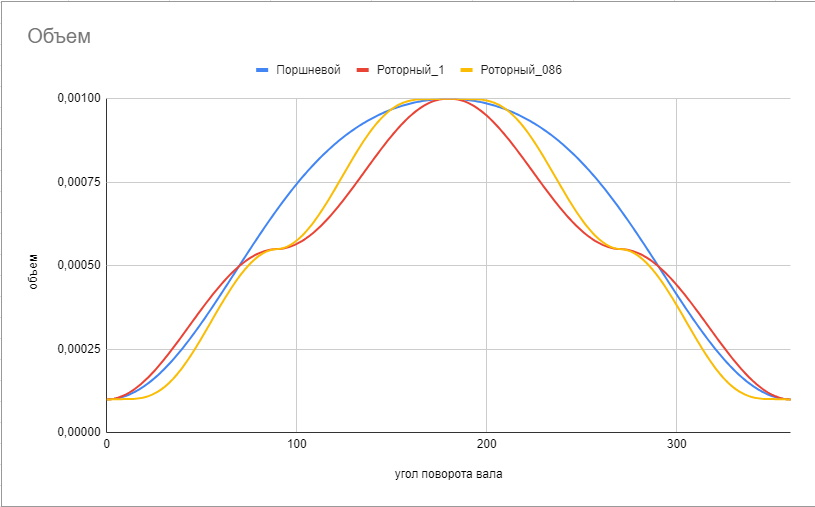
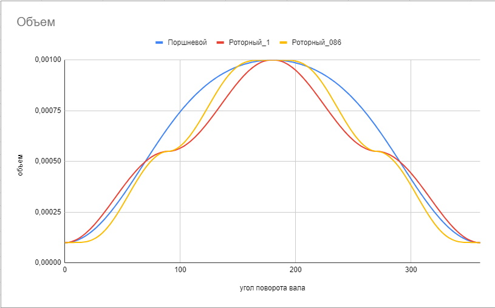

На сколько двигатель дувухроторной конструкции эффективнее (или менее эффективен), чем обычный
поршневой мотор? И для поршневого и для роторного двигателя один такт происходит за 180 градусов поворота вала. Для расчета
эффективности двигателя нужно знать 2 параметра для любого угла поворота вала g (коленвала или ЗКВ): 1 - сила F действующая на поршень (лопасти), 2 - плечо силы r.
Зная эти два параметра можно найти момент M развиваемый двигаетлем при определенном положении вала просто умножив силу на плечо M = F * r. Формула работы A = F * S (сила
умноженная на перемещение) для прямолинейного движения для кругового движения имеет вид A = M * g. Сумма всех моментов полученных на
каждом шаге поворота вала dg (размер шага - стремится к 0) даст работу А = lim(∑(M*dg), dg→0) (предел суммы - это интеграл).
То есть нужно проинтегрировать момент по углу поворота вала. На такте рабочего хода двигатель отдает энергию, а на такте
сжатия - потребляет. Поэтому вычитая потребленную работу из произведенной получим работу двигателя А = lim(∑(M*dg, g = 0..180), dg→0) - lim(∑(M*dg, g = 180..360), dg→0).
Для сравнения рассматривал двигатели с одинаковым рабочим объемом и степенью сжатия. Я выбрал объем 1 литр и степень
сжатия 10. То есть объем менятся от 0.1 литра в ВМТ до 1.1 литра в НМТ для поршневого двигателя. Для упрощения описания буду использовать обозначение ВМТ/НМТ и в
отношении двухроторного двигателя: ВМТ - это положение с наименьшим объемом рабочих камер (аналогично ВМТ для поршневого мотора). Так же площади поршня и лопаток на которые воздействует
давление считаю одинковыми. В этом случае можно считать силы создаваемые давлением в камерах одинаковыми (т.е. просто соответсвуют давлению 1:1). Максимальную температуру сгораня (в ВМТ) взял 2300°С.
Расчет делал для идеального двигателя (не учитывались зоны всасывания/выхлопа).
Для поршневого двигателя момент считается просто - сила F созданная давлением в цилиндре умножается на плечо r для каждого положения вала.
Для двухроторного двигателя сложнее.
Рассмотрим схему для одного цилиндра. Сила F создает момент Ma = F * a. Он создает в точке контакта зубчатых передач k усилие Fb = F * (a / b).
Сила Fb создает относительно оси ЗКВ момент Mc = Fb * c. Так как цилиндров два - они создают на валу противоположно направленные моменты. Результирующий
момент равен разности моментов создаваемых цилиндрами. Точка k (точка контакта передач) лежит на линии между осью цилиндров и осью ЗКВ.
Она перемещается при повороте ЗКВ. Но при этом изменяется не только расстояние c но и расстояние b. Это приводит к тому, что
сила Fb от опорного ротора меньше чем сила Fb от ведущего ротора. При этом и расстояние с для опорного ротора меньше чем для ведущего.
Следовательно моменты создаваемые роторами различаются не только на разность расстояний с относительно оси ЗКВ, но и на разность усилий Fb.
Причем меньшее расстояние c умножается на меньшую силу Fb (момент опорного ротора), а большее расстояние с умножается на большую силу Fb
(момент ведущего ротора). Этот эффект как линза увеличивает эффективное плечо. Физический размер rmax для обоих двигателей одинаков и принят в расчете за 1
(что бы уйти от каких то конкретных значений). Но эффективное плечо для роторного двигателя значительно больше (что и отражено на графике "Эффективное плечо").
Поэтому оценка довольно условная. Она показывает эффективность двигателей как если бы максимальное физическое плечо силы у них было одинаковым при всех одинаковых прочих параметрах.
Не буду утомлять деталями расчета. Перейду к результатам. Не суть важно в каких конкретно величинах значения на графиках. Меня интересовала качественная
картина.

Точки на графике "Момент" получены умножением значения на графике "Эффективное плечо" на значение на графике "Давление" (именно эти графики
расположены друг под другом для наглядности).
Вычитание площади фигуры полученной на графике "Момент" в углах от 180 до 360 из площади фигуры в углах от 0 до 180 дает искомую работу двигателя (A).
Расчет показал, что работа роторного двигателя больше работы поршневого двигателя в ~1.36 раза. Максимальный момент больше в ~1.17 раза.
На этом можно было бы и закончить.
К сожалению изначально я допустил ошибку в расчетах. Не учел "линзирование" плеча. В итоге получил работу роторного двигателя на 1.2% менше чем у поршневого.
Это выглядело странно так как при повороте вала на 90° (до максимального плеча) объем в поршневом двигателе увеличивается на ~63%, в то время как в роторном двигателе объем увеличивается только на 50%.
Давление в роторном двигателе должно быть выше при том же плече. Поиск ошибки привел к анализу графика "Объем". На графике моментов видно, что
основную долю работы двигатель совершает при углах поворота вала от ~10° до ~70°. Однако на графике "Объем" видно, что именно в этой зоне
расширение в роторном двигателе происходит быстрее чем в поршневом. Соответсвенно именно в зоне значительно влияющей на производительность давление в камерах роторного двигателя ниже
(а значит меньше сила передаваямая на зубчатые передачи). И только после 70° расширение в поршневом двигателе начинает обгонять расширение в роторном. То есть роторный двигатель "вывозит" только за счет
более эффективной передачи (плечо нарастает быстрее). Но пока ошибка не была найдена мне это было не известно. Идея решения состояла в том, что бы
найти такую форму шестерен передачи ЗКВ при которой расширение от ВМТ слегка замедлится. Что бы график расширения роторного двигателя прошел под графиком для поршневого.
Так появилась идея использовать овальные передачи для шестерен ЗКВ вместо круглых. На картинках пояснение, что означает эллипсность в расчетах. Для рачетов
использовал единичные эллипсы - это такие у которых одна ось 1, а вторая боьлше или меньше 1. Эллипсность меньше 1 (0.8 например как на картинке) - это
эллипс "сплющщеный" по y, а эллипсность 1.25 - "сплющщеный" по x ( 1.25 - это тот же 0.8 повернутый на 90°).Соответсвенно эллипсность 1 - это круг единичного радиуса.
То есть это отношение y / x при условии, что x или y равен 1.
Интуиция подсказывала, что нужно располложить эллипсы "вертикально" (как на картинке)
Но она подвела. Расчет моментов для различных значений эллипсности больше 1 показал, что никакого значительного прироста производительности это не дает.
Графики для различных значений эллипсности больше 1 на картинке.
Тогда из хулиганских побуждений был просчитан вариант с эллипсностью меньше 1. Расположение представлено на картинке.
При значении 0.95 - мизерный плюс, при 0.9 - сильно меньше, чем при 1... Казалось бы тенденция к уменшению работы. Но на значении 0.86
график просто "выстрелил" вверх. Результат на графиках.

Тут и без расчетов видно, что при использовании ЗКВ с эллипсностью 0.86 работа
двигаетля растет в разы. В таком варианте и эффективное плечо больше и давление в камерах значительн выше. На графике "Объем" видно
, что возникает небольшая задержка расширения в ВМТ/НМТ которая "сжимает" по x (по углам поворота) остальной график. Таким образом
давление во всем диапазоне углов поворота от 0° до 180° остается выше чем в поршневом двигателе.
Если сравнение с поршневым двигателем можно считать условным, то сравнение с той же конструкцией использующей ЗКВ с круглыми шестернями
однозначно показывает значительный прирост производительности. Существуют значения эллипсности при которых работа еще выше. Однако
из диапазона 0.6 - 1 значение 0.86 (возможно одно из 0.86х - не исследовал) дает максимальную работу и оно конструктивно наиболее удобное.
Ближайшее значение эллипсности с большей работой чем при 0.86 - значение 0.58 (остальные еще меньше). Но оно вряд ли приемлимо по конструктивным соображениям.
На графике эволюция момента для некоторых значений эллипсности.
Итоговый сравнительный расчет производительност такой (поршневой двигатель принят за 1):
 
